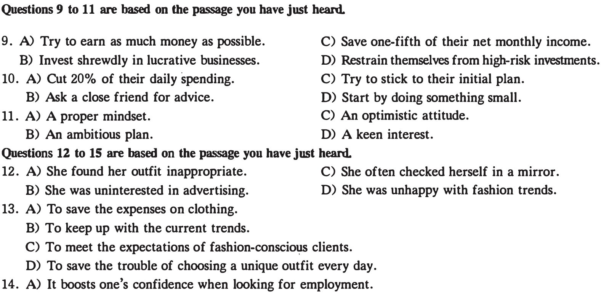
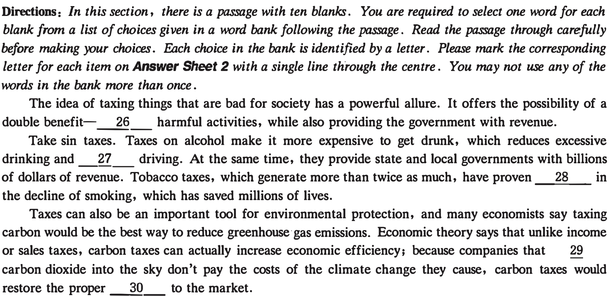
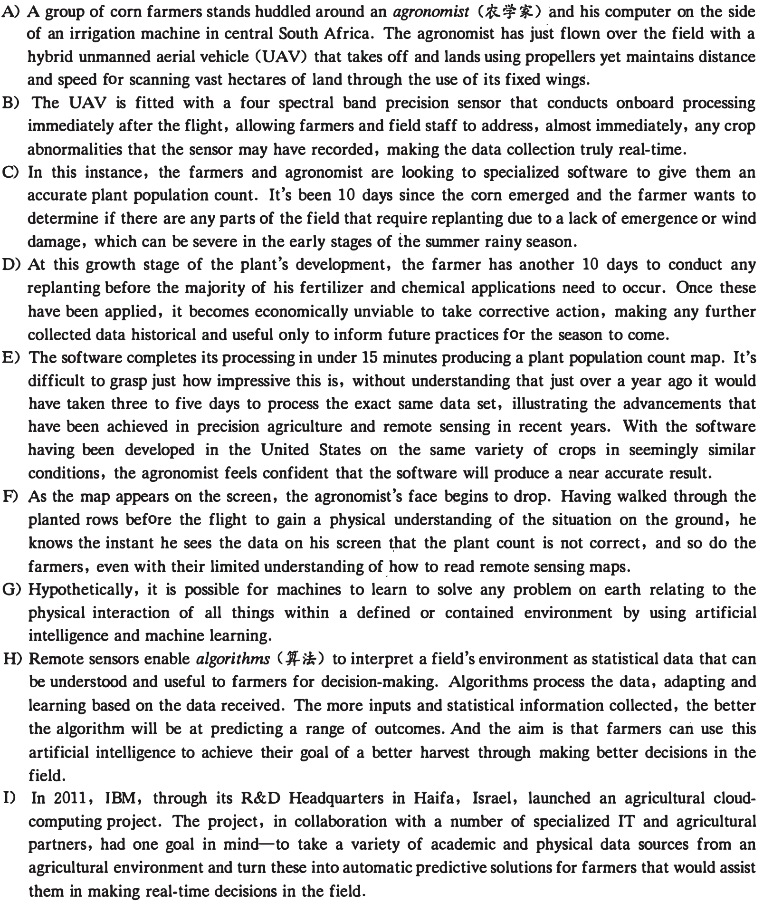
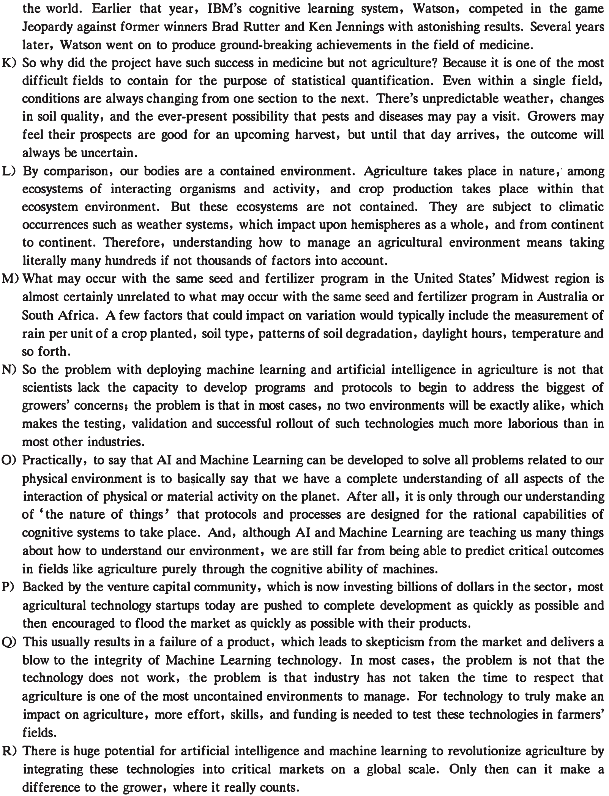
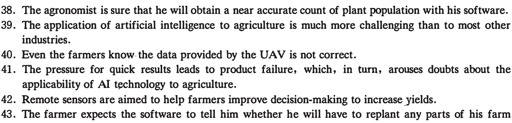
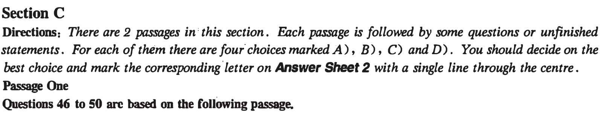
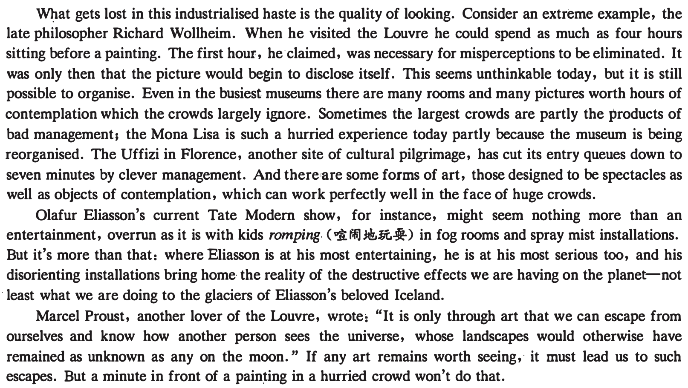

Part I Writing ( 30 minutes)
Directions: For this part, you are allowed 30 minutes to write an essay on why students should be encouraged to develop the ability to meet challenges. You should write at least 150 words but no more than 200 words.
Part ll Li&iening Comprehension ( 30 minutes)
Section A
Directions: Jn this section, you will hear two long conversations. At the end of each conversation, you will hear four questions. Both the conversation and the questions will be spoken only once. After you hear a question, you must choose the best answer from the four choices marked A), B) , C) and D). Then mark the corresponding letter on Answer Sheet 1 with a single line through the centre.
Questions 1 to 4 are based on the conversation you have just heard.
1.
2.
3.
4.
Questions S to 8 are based on the conversation you have just heard.
5.
6.
7.
1human beings.
8.
本页部分文字层异常，已保留原图文字区域；这些区域随窗口缩放，暂不能重新换行或复制。
Section B
Directions: In this section, you will hear two passages. At the end of each passage, you will hear three or four questions. Both the passage and the questions will be spoken only once . After you hear a question , you must choose the best answer from the four choices marked A ) , B) , C) and D ). Then mark the corresponding letter on Answer Sheet 1 with a single line through the centre.

9.
10.
11.
12.
13.
14.
15.
•
Section C
Directions: In this section, you will hear three recordings of lectures or talks followed by three or four questions. The recordings will be played only once . After you hear a question , you must choose the best answer from the four choices marked A), B), C) and D). Then mark the corresponding letter on Answer Sheet 1 with a single line through the centre.
Questions 16 to 18 are based on the recording you have just heard.
16.
17.
18.
Questions 19 to 21 are based on the recording you have just heard.
19.
20.
本页部分文字层异常，已保留原图文字区域；这些区域随窗口缩放，暂不能重新换行或复制。
Questions 22 to 25 are based on the recording you have just heard.
22.
23.
24.
25.
Part][ Reading Comprehension ( 40 minutes)
Section A

In reality, carbon taxes alone won't be enough to halt global warming, but they would be a useful part of any climate plan. What's more, the revenue from this tax, which would _fil_ be hundreds of billions of dollars per year, could be handed out to citizens as a _32_ or used to fund green infrastructure projects.
Similarly, a wealth tax has been put forward as a way to reduce inequality while raising revenue. The revenue from this tax, which some experts 33 will be over $ 4 trillion per decade, would be designated for housing, child care, health care and other government benefits. If you believe, as many do, that wealth inequality is 34 bad, then these taxes improve society while also _35_ government coffers ( ½ .4).
本页部分文字层异常，已保留原图文字区域；这些区域随窗口缩放，暂不能重新换行或复制。
Section B
Directions: In this section, you are going to read a passage with ten statements attached to it. F.ach statement contains information given in one of the paragraphs. Identify the paragraph from which the information is derived. You may choose a paragraph more than once. F.ach paragraph is marked with a letter. Answer the questions by marking the corresponding letter on Answer Sheet 2. The Challenges for Artificial Intelligence in Agriculture

J) Interviews with some of the IBM project team members at the time revealed that the team believed it was entirely possible to "algorithm" agriculture, meaning that algorithms could solve any problem in
本页部分文字层异常，已保留原图文字区域；这些区域随窗口缩放，暂不能重新换行或复制。

36. Farmers will not profit from replanting once they have ·applied most of the · fertilizer and other
chemicals to their fields.
37. Agriculture differs from the medical science of the human body in that its environment is not a
contained one.
本页部分文字层异常，已保留原图文字区域；这些区域随窗口缩放，暂不能重新换行或复制。

38. The agronomist is sure that he will obtain a near accurate count of plant population with his software.
39. The application of artificial intelligence to agriculture is much more challenging than to most other industries.
40. Even the farmers know the data provided by the UAV is not correct.
41. The pressure for quick results leads to product failure, which, in turn, arouses doubts about the applicability of AI technology to agriculture.
42. Remote sensors are aimed to help farmers improve decision-making to increase yields.
43. The farmer expects the software to tell him whether he will have to replant any parts of his farm fields.
44. Agriculture proves very difficult to quantify because of the constantly changing conditions involved.
45. The same seed and fertilizer program may yield completely different outcomes in different places.

What is the place of art in a culture of inattention? Recent visitors to the Louvre report that tourists can now spend only a minute in front of the Mona Lisa before being asked to move on. Much of that time, for some of them, is spent taking photographs not even of the painting but of themselves with the painting in the background.
One view is that we have democratised' tourism and gallery-going so much that we have made it effectively impossible to appreciate what we've travelled to see. In this oversubscribed society, experience becomes a commodity like any other. There are queues to climb Mt. Jolmo Lungma as well as to see famous paintings. Leisure, thus conceived, is hard labour, and returning to work becomes a well-eameq break from the ordeal.

46. What does the scene at the Louvre demonstrate according to the author?
47. Why did the late philosopher Richard Wollheim spend four hours before a picture?
48. What does the case of the Uffizi in Florence show?
49. What do we learn from Olafur Eliasson's current Tate Modern show?
50. What can art do according to Marcel Proust?
Passage Two
Questions 51 to SS are based on the following passage.
Every five years, the government tries to tell Americans what to put in their bellies. Eat more vegetables. Dial back the fats. It's all based on the best available science for leading a healthy life. But the best available science also has a lot to say about what those food choices do to the environment, and some researchers are annoyed that new dietary recommendations of the USDA ( United States Department of Agriculture) released yesterday seem to utterly ignore that fact.
Broadly, the 2016- 2020 dietary recommendations aim for balance: More vegetables, leaner meats and far less sugar.
But Americans consume more calories per capita than almost any other country in the- world. So the things Americans eat have a huge impact on climate change. Soil tilling releases carbon dioxide, and delivery vehicles emit exhaust. The government's dietary guidelines could have done a lot to lower that climate cost. Not just because of their position of authority: The guidelines drive billions of dollars of food production through federal programs like school lunches and nutrition assistance for the needy.
On its own, plant and animal agriculture contributes 9 percent of all the country's greenhouse gas emissions. That's not counting the fuel burned in transportation, processing, refrigeration, and other waypoints between farm and belly. Red meats are among the biggest and most notorious emitters, but trucking a salad from California to Minnesota in January also carries a significant burden. And greenhouse gas emissions aren't the whole story. Food production is the largest user of fresh water, largest contributor to the loss of biodiversity, and a major contributor to using up natural resources.
All of these points and more showed up in the Dietary Guidelines Advisory Committee's scientific report, released last February. Miriam Nelson chaired the subcommittee in charge of sustainability for the report, and is disappointed that eating less meat and buying local food aren't in the final product. "Especially if you consider that eating less meat, especially red and processed, has health benefits," she says.
So what happened? The official response is that sustainability falls too far outside the guidelines' official scope, which is to provide "nutritional and dietary information."
Possibly the agencies in charge of drafting the decisions are too close to the industries they are supposed to regulate. On one hand, the USDA is compiling dietary advice. On the other, their clients are US agriculture companies.
The line about keeping the guidelines' scope to nutrition and diet doesn't ring quite right with researchers. David Wallinga, for example, says, "In previous guidelines, they've always been concerned with things like food security-which is presumably the mission of the USDA. You absolutely need to be worried about climate impacts and future sustainability if you want secure food in the future."
51. Why are some researchers irritated at the USDA's 2016 - 2020 Dietary Guidelines?
52. Why does the author say the USDA could ·have contributed a lot to lowering the climate cost through
its dietary guidelines?
53. What do we learn from the Dietary Guidelines Advisory Committee's scientific report?
54. What may account for the neglect of sustainability in the USDA's Dietary Guidelines according to the
author?
55. What should the USDA do to achieve food security according to David Wallinga?
Part N Translation ( 30 minutes)
Directions: For this part , you are allowed 30 minutes to translate a passage from Chinese into English . • You should write your answier on Answer Sheet 2.
北京大兴国际机场位于天安门广场以南46公里处,于2019年9月30日投入使用。该巨型工程于2014 年开工建设,高峰时工地上有4万多工人。航站楼设计紧凑,可以允许最大数量的飞机直接停靠在最靠近航站楼中心的位置,这给乘客提供了极大的方便。航站楼共有82个登机口,但乘客通过安检后,只需不到8分钟就能抵达任何一个登机口。机场的设计可确保每小时300架次起降。机场年客运量2040年将达到1亿人次，有望成为世界上最繁忙的机场。